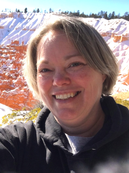
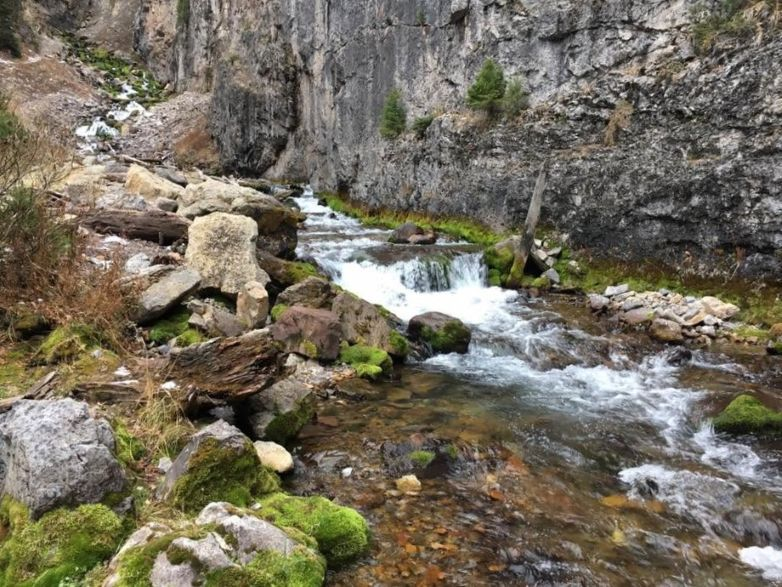

Jennifer Merritt
About Me
My name is Jennifer Merritt and most people call me Jen. I was born in the state of Utah in the United States and currently live in Afton, Wyoming, USA. I have had an interesting string of jobs from house cleaner, food service, Emergency Medical Technician, Phlebotomist, and currently lunch lady at our local Middle School. Now I am studing Computer Technology and Programming. My favorite things to do are play with my grandchildren, explore new places, do things with my hands, and learn new skills.

Afton, Wyoming, USA

Wyoming is a landlocked state in the Mountain West subregion of the western United States. With an estimated population of 587,618 as of 2024, Wyoming is the least populous state despite being the 10th largest by area and has the 2nd lowest population density. It is best know for its two national parks: Yellowstone National Park and Teton National Park. The Periodic (or Intermittent) Spring in Afton, where I live, is the world's largest cold water rhythmic spring.